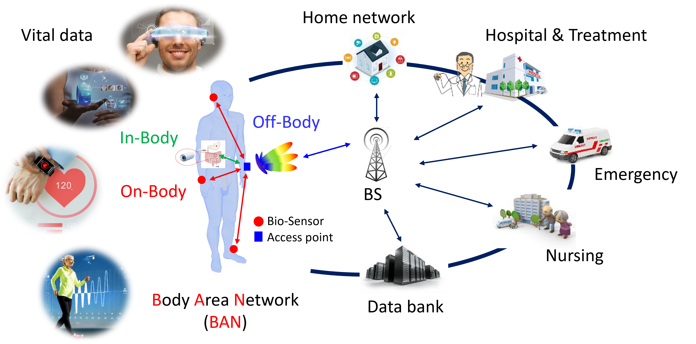

「スマートボディエリア無線通信研究室」へようこそ。
Welcome to the Smart Body-Centric Wireless Communications Laboratory
当研究室では、人体周辺エリアでの超高速・高信頼性の無線通信システムおよびアプリケーションを実現するため、スマートなRFデバイスの開発に注力しています。人体と高周波電磁界の相互作用の解析と実験により、様々な小型のウェアラブルおよびインプラント無線端末、移動通信性能評価のMIMO-OTA評価システム、そして人体に対する電磁波のばく露安全性評価方法を開発しています。
Our laboratory is devoted to developing Smart RF devices for achieving ultra-high-speed and high-reliability wireless communication systems and applications around the human body. Through analysis and experimentation on the mutual interaction between the human body and high-frequency electromagnetic fields, we are developing the small wearable and implantable wireless terminal, MIMO-OTA communication performance evaluation systems, and electromagnetic radiation safety assessment methods.


News
- 2024/01/20: Our paper entitled “Spatially Averaged Epithelial/Absorbed Power Density for Non-Planar Skin Models Exposed to Antenna at 10–90 GHz” has been accepted for publication in IEEE Access (IEEE ICES TC95/SC6 WG activities) [DOI]
- 2023/12/29: Our paper entitled “A wideband dual-band bandstop filter with independent control of stopband rejection, bandwidth and center frequency ratio” has been accepted for publication in IET Microwaves, Antennas & Propagation (collaboration work with Jilin Univ.) [DOI]
- 2023/10/14: Our paper entitled “Parameter variation effects on millimeter wave dosimetry based on precise skin thickness in real rats” has been accepted for publication in Scientific Reports (collaboration work with Hokkaido Univ., Kurume Univ., Aichi-Gakuin Univ., and KITech) [DOI]
- 2023/09/20: Prof. Li has been invited to give a tutorials speech and defense a PhD degree thesis at University of Split, Croatia
- 2023/09/04: Our paper entitled “Intensity-dependent Temperature Rise Induced by Local Exposure to 26.5 GHz Quasi-Millimeter-Wave in Rat” has been accepted for publication in in vivo (collaboration work with Kurume Univ., Hokkaido Univ., Aichi-Gakuin Univ., and TUAT) [DOI]
- 2023/09/01: Our paper entitled “Clothing Effect on Multilayered Skin Model Exposure from 20 GHz to 100 GHz” has been accepted for publication in IEEE Journal of Electromagnetics, RF and Microwaves in Medicine and Biology (collaboration work with NICT and IETR) [DOI]
- 2023/08/23: Prof. Kun Li has been selected as the Early Career Representative (ECR) of URSI Commision-K in URSI-GASS 2023@Sapporo
- 2023/07/04: Our paper entitled “A Novel Power Divider With Arbitrary Power Ratio, Arbitrary Phase Difference and Controllable Bandwidths” has been accepted for publication in AEU - International Journal of Electronics and Communications (collaboration work with Jilin Univ.) [DOI]
- 2023/04/01: Smart Body-Centric Wireless Communications laboratory has been established@AWCC,UEC